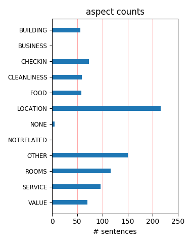
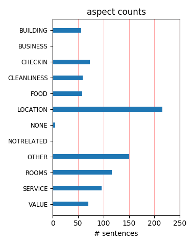

very nice place This was a very nice hotel. The rooms are large for a NY hotel. The linens are fabulous. The lobby was pretty. The view was nice. One of the elevators was out of service but we didn't have to wait too long on any given day.
Marriott Financial Have just returned from a week end in New York and had a fantastic stay in Marriott Financial Hotel. The location was great and the breakfast in Roys hotel was a good start to the day. The staff were very helpful and everything was very clean.
Decent Marriott, Slow Elevators This is a pretty decent hotel. The rooms are large for Manhattan, and were clean and comfortable. The location on West Street isn't great, but it's lower Manhattan so everything is close anyway.The elevators were brutally slow. I waited about 15 minutes in the morning waiting.
Just Great! I have stayed at this hotel twice and it was just great! Staff is friendly and helpfull, Subway is just one block away. Wall Street, Chinatown, Battery Park and a nice boardwalk are near the hotel. The rooms are very clean... Need I say more? This is definitely my first choice when I go to New York!
Very Nice Stayed here for 3 days. Had a corner room with two queen beds. The hotel was very clean. The staff was excellent. Paid $169.00 per night over the weekend. The only drawback was that the pool was closed for renovation. However, they paid for our cab ride to Brooklyn Marriott so the children could swim.
Fantastic hotel!!! My family stayed there December 22nd and 23rd. It was fantastic! Everyone is very nice and helpful, the hotel is clean, beds are extremely soft and the view is amazing. I would highly recommend this hotel. It is near the subway, good restaurants and the World Trade Center. We will be back again.
Great Hotel We stayed for the weekend in July with the parking and breakfast package. Room was large and clean. Our room was next to the elevator on the 19th floor. It was very quiet. The breakfast at Roy's was delicious. The hotel is a couple blocks to the subway. We were out till 11:00pm and felt safe. I would definately stay here again.
Excellent Hotel My husband and I celebrated our wedding anniversary in NYC. The travel agent booked the Marriot Financial Center. Because of 911 and the commute to mid-town, we thought it would be a disaster. In turned out to be an excellent hotel. The accomodations were very clean and service was outstanding. I highly recommend this hotel! Dr. in South Florida
Unlike a NYC hotel Large rooms, comfortable beds, quiet A/C unit, great views ,local markets and mapa eateries nearby made this an exceptional value. The only negative was that the trains don't run on weekends because of local construction, so you have to hoof it alittle, and the Starbucks on the property don't take Starbuck cards. Roys on the Labor Day weekend was OK.
Great Weekend Specials We stayed here the weekend before Christmas and received a wonderful package that included parking and breakfast. Our room was very comfortable. Our breakfast far exceeded our expectations and the parking was very easy. It is simple to get to the hotel by car which is saying a lot for vacationers not used to driving in NYC. We highly recommend staying here.
Fine if undistinguished This hotel is in a good location- lots of subway lines nearby. And it's close to Century 21 discount department store. Rooms are large and well appointed. Concierge gave me the wrong information about the cost of a cab back to JFK- it's not a fixed fee going out- and i queried that, but she insisted.But they let me have a late check out without charge which was good.
Smelly rooms and poor costumer service I didn't like this hotel. We arrange trough their website our arrival at 11.00 Am and the room was ready at 4.00 PM. The staff was rude. The room smelly like dirty clothes, we are 4 and request extra towels and extra pillows, but never arrived in our room.Dirty bathroom, dirty towels, dirty room.For sure, never again.The location is so far from everything.
Great for new york We have just returned from a week at the Marriott. The hotel is above average and the service is alright. The A/C didn't work very well, so it was either always on or off. The rooms were OK but smelled musty. The bathroom needed some paint.Great location and good staff. A very quite part of town. right next to the 9/11 sight.Very close to Battery Park. The R, W and 1 subway are a block away.
Great location, your escape from the City This is a great hotel located very close to Ground Zero. Marriott have managed to bring this hotel back to life and it offers a part of the City with lots of greenery and fresh air. The bedrooms in the hotel were large with great views over the Statue of Liberty and they had the most comfortable beds. Great hotel for leisure or business. I will defintely stay there again.
More Than I Expected! Not really a fan of Marriotts...only because of some of my former stays, but this was a class act! Excellent accomodations (spotlessly clean) with a great bed and view . Wonderful and very helpful staff. Area perfect for lower Manhattan sites and easy access via subway to other parts of NYC. Lots of restoration/revitalization in the area. Enjoyed a walk along the river in the morning with our coffee!
Staff is top notch!! We received one of the newly refurbished rooms (I'm not sure they're all done yet) and it.When we checked in there was a huge group (and lots of kids), yet the staff stayed very polite, professional and helpful.The location is good (near 1 subway), but not great, otherwise I can't think of any other constructive feedback - the rooms, the service and staff were all wonderful - even when they were swamped.
Pretty Nice This is a very nice hotel. Staff is very professional, and I was actually able to check-in early. My room had a wonderful view of the Statue of Liberty. The room was very clean, not very big. Bed was extremely comfortable, and the marble bathroom is quite nice. I asked the front desk for a dinner recommendation and they whipped out a map and marked some spots on it for me to try. Overall, I enjoyed my experience here.
Very comfortable First time at this location. It was very professional. Very clean. The beds were comfortable. GREAT views of the harbor. It's in walking distance to 2 subway lines (and the amazing discount dept. store, Century 21). There's a Roy's restaurant and Starbucks off the lobby. I highly recommend this hotel for your next stay in NYC. Only drawback is that there's a lot of construction going on around this hotel since 9/11.
Very Nice Hotel - Slightly Out of the Way We stayed here for a weekend. Pretty much everything inside the hotel was extremely nice. Had a great view of Battery Park City and the Hudson River. Service was very professional, friendly bartender (expensive drinks). Good place for a romantic getaway. It is a little out of the way from the subway, but with walking distance of most downtown attractions (it is next to Ground Zero) including the South Street Seaport.
Enjoyed the stay Overall, I was impressed with this property. Bell man and front desk extremely helpful as far as activities to do in New York. Good location in the financial district. Only a block or so to the train that you can get anywhere on. My room had a great view, was on the end so had two full windows looking out with a slight view of the river. Great meeting rooms and wonderful food. Staff did everything they needed to make it a more pleasant stay, and the housekeeper was great!!
We will stay in this hotel next trip. We/ve stayed in several areas of the city before,but will return to the Marriott Financial Center again.The area is vibrant,full of optimism,safe and clean.The concierge(Goeffrey)showed us how to use the #1 line of the subway and we zipped around the city easily.Sunday morning we took a walk to Battery Park and went to a cultural festival.Trees,grass,familes,food,gorgeous views! Our room was on the 17th floor....could see Ellis Island,ferries...we'll be back!
Great Hotel for Location We usually stay in midtown when traveling to NYC. Last time we stayed at the Marquis (highly recommend) However, knowing that Marriott is known for comfort, we decided to give it a shot. Although, this hotel is not on top of the midtown hotspots, it is very very nice. The rooms are big for NYC. Nicely appointed. What a great bed. Bring your significant other for a great weekend in lower manhattan. Great views of the river and Status of Liberty. Subway is nearby for a fast ride uptown.
EXCEPTIONAL Service!!! Hello,My sister and I recently treated my mom to a weekend in NYC in celebration of her 50th birthday. The employees at the NY Marriott Financial Center went above and beyond to make our weekend in NYC extraordinary. The beds were extremely comfortable and the hotel was clean. We ordered pizza on Saturday night and hotel security escorted them to the room. It definitely made us feel safe! The hotel is close to the Rector St subway station (two blocks). I DEFINITELY recommend this hotel!!
Nice Hotel/Boring Location Stayed Saturday night in November, 2008. Bid $250.00 on Priceline.Location: accross the street from Ground Zero. Can observe the construction outside room's window. Financial district area is dead on weekend and after hours. Subway stop three-ish blocks away.Appearance: fairly new, probably from renovation after 9/11. Everything had a better than standard look, but definitely not luxurious.Recommendation: stay, but weigh in costs in time and money of traveling to activity centers (e.g., 42nd Street).
Good option in NYC Stayed at the Marriott Finanical Center a couple of weeks ago. Picked this location somewhat last minute because I was able to get a good weekend rate and the location is good. If you are particularly interested in lower Manhattan you can't beat this place. Also the service was excellent. I had several special requests and the hotel staff met each in prompt order. My only issue is the construction that is going on around the hotel and on the roadways. But given that the hotel is located next to Ground Zero is certainly understandable.
ok, but only stay there is you really need to be downtown This hotel is right next to the World Trade Center site. My room was on the 36th floor with a view of the re-construction. My advice would be to ask if you have a view, and if you don't want to see that (I honestly did not) then ask to move. The rooms are ok (not large, but average for New York). Lighting in the room was not adequate for working on your pc., The elevators are very slow. The workout room is nothing special. if you can stay in mid-town, there are much better options for food/services.
AWESOME HOTEL My mother, daughter and I stayed at this hotel when my daughter ran the NY Marathon. While I agree it was a bit out of the way as far as being right in the city, our stay there was incredible. The rooms were immaculate, the restaurant was wonderful and the bell hops were the most helpful I had ever seen. They offered to get us an SUV to take us (and 2 other people in our group)to JFK so we didn't have to pay for two taxis. They also applauded my daughter when we got back from the marathon for her accomplishment in running! We loved staying there
Great Location This was the third time I've stayed at this property. It is conveniently located close to the financial centers. I also liked the fact that all the subway lines to anywhere in the city are located within a four block walk. The room was very clean with a comfortable bed. The bathroom is not anything over the top. Plenty of exercise equipment (weight machine sub-par) and a pool. You are a three blocks from the walkway along the Hudson in Battery Park. In pleasant weather this is a great place to go and unwind. This is a good value given the location.
Good Business Hotel Stayed at the Marriott Financial Center for two nights to attend a conference. Nice clean rooms, average size. Not a lot of restaurants close to the hotel. Checked in at 7:00 pm after a long flight across the county, ate in the hotel bar with average menu. Being in the financial district you're not close to Time Square, Broadway or Rockefeller Center, about a 30 minute subway ride or $20 cab ride. If you have business in the financial district this is a nice hotel, close to Wall Street. If you鈥檙e their to sight see, try to stay mid-town or Time Square.
Decent Marriott in Financial District Marriott Downtown is decent hotel in Financial District, steps away from ground zero. I stayed for business as it was convenient to my meetings; it's not near many touristy sites if you're visting NYC. Room included: hair dryer, iron, coffee maker, flat-screen tv, expensive high-speed internet, in-room safe, bath amenities shampoo, lotion, conditioner, etc.Pros:* Spacious and clean* Comfortable bedCons:* Noisy hallways* Elevators currently under repair and caused some delays in waiting* In-room safe was in a drawer, making it difficult and heavy to open.
Perfect for a Christmas Trip I stayed with my wife in this hotel for one week and we were very satisfied. The room was spacy, very clean with extremly comfortable beds and stylish furnitures. We had a room in the 23th floor and the view over the WFC and the Hudson River was wonderful. The front desk personal was very friendly and helpful and the location in the Financial District is not so bad for tourists, as we could read in some other reviews. The next Subway station is just a few walking minutes away. And over all we were surprised, how quiet the hotel is, probably the result of a good isolation between the rooms.
Great Stay at New York Marriott Financial Stayed at the New York Marriott Financial right before the Christmas holidays. The other Marriott properties in New York would do well to follow the example of the Financial Marriott. Rooms are larger and you definitely have the feeling of spaciousness. The staff is very accomodating and how bad can it be when there is a Roy's Restaurant on property. The restaurant serves breakfast (which is wonderful), lunch and dinner and of course dinner being their forte. It is very easy to catch the subway to get anyplace in the city. Also, easier to get to any of the airports from this property.Enjoy
Great hotel A group of us stayed here for a long weeekend when we got a good deal through British airways. Slight hiccups on checking in as requests such as 2 beds and smoking rooms had not been passed through to the hotel, but were easily resolved. Rooms were big for NYC (well 3 times the size of the room we'd had at the Hudson). Location was fine, very near subway lines so easy to get about. The staff at the hotel were fabulous, Ben at reception couldn't have been more helpful, getting us reservations and information about bars etc. The bar at the hotel wasnice for a drink before going out to dinner. All in all a lovely place to stay
Excellent stay at the Marriott Financial Center We stayed at the Marriott in August 05 for 1 week.We had a double room and it was spacious enough for the family of 2 adults and 3 children.It was on the 20th floor with a view of the hudson river.The children enjoyed the swimming pool .The hotel staff were friendly and helpful.The service was excellent.Roys resturant and cocktail bar within hotel.Hotel near ground zero and subways. Felt safe around area during night because of police presence.I would recommend this hotel if you prefer to be away from the busy locations of midtown.Regular subway trains are a short ride to the midtown area.
Very Nice Marriott, Good Service, Location Just Okay I was very impressed by this Marriott. The rooms are newly renovated and the hotel is very nice. There's a Starbucks and Roy's in the lobby. The service was very accommodating and there's a nice workout facility (with an indoor pool). My only real complaint was the location. With all the construction at the WTC site, it was difficult to get around. If you have business in the financial district, this is a perfect location. If you're in NYC as a visitor to see the sites, it's a little cumbersome. All in all, I was very happy with the hotel -- it was probably the nicest Marriott that I've stayed at.
First timer Just spent one night in a concierge level room -- travelling on business. Room was typical Marriott middle tier -- rather drab and antiseptic but very clean and quiet. Bed was too soft and desk was too small to hold a laptop and some papers. Bathroom was large and towels were plentiful. Concierge lounge was pretty ordinary with breakfast being better than evening. Room service was unusually good. Staff was very accomodating albeit rather rushed at check in (almost too fast). Location was prime for my business purpose although I would agree that it is out of the way for most leisure travellers. I did enjoy an early evening stroll along the waterfront.
Easy location for all of Manhattan - Allowed 4 adults in room This was one of the only hotels in Manhattan that allowed 4 adults in the room which was a huge cost savings for us! We got a good rate by staying over a holiday weekend, since this hotel caters to business travelers. Even though it is down at the south tip of manhattan, I found it to be very convenient to everything we wanted to do since it is close to 3 major subway lines. We saw a broadway show and then easily took the 1 Train directly from Times Square to Rector Street by the hotel - no changes. The rooms were comfortable and nicely decorated. Nice gym and pool. And a starbucks in the lobby - perfect!
Excellent hotel! Just stayed at the Marriott Financial this past weekend 2/25/05-2/27/05. Very nice hotel, clean, quiet, nice staff and felt very safe (saw security walking the floors). We were in a spacious corner room looking over the harbor and battery park.. The best features were the fabulous breakfast buffet with made to order waffles and omelets, swimming pool for the kids, very comfortable beds and friendly staff. It鈥檚 a little bit away from the hustle and bustle 鈥?which is good if you want to wind down. Drove in and it was easy to find and the car was very close by in a monitored lot. All in all a very nice comfortable hotel. Will definitely stay there again.
Wonderful Experience Family of four (including rambunctious 7 yo) had a great stay. Got a room on the 30th with a view of Statue of Liberty. Room was excellent, Staff was friendly and helpful. Pool was decent size with steam room and well equiped gym. Location was ideal. 1 block from Ground Zero. 5 minutes walk from ferry to Statue of liberty. 10 mins by subway to Times square and the mid town action but far away enough to sleep peacefully.Would very highly recommend especially if you can get the buffet breakfast included. Valet parking was $40/night (this is New York) but at least the car came back in one piece. Actually neighborhood was very safe late in to the night
Nice hotel Although I wasn't pleased with the location of the room they initially offered, polite insistence got me a much nicer room with an excellent view of New York harbor. The room was fairly small, but more than sufficient for my needs as a single business traveler. The bed was quite comfortable. I would definitely consider staying there again, even if I were coming to New York as a tourist. Sure, it's farther from most tourist attractions, but still only a short subway ride away. And although the area is pretty dead at night, that provides some of the peace and quiet that is so hard to find in Manhattan. The nearby Millenium Hotel is in what looked to me an even quieter, though less scenic, location.
Reasonable service, nice lobby Unlike the previous poster, I didn't get chocolates or a view of the harbour...my view was of an apartment building. However, all in all, not a bad experience. Staff was helpful when I had a couple of questions on different occasions, but I wouldn't describe them as particularly friendly (with the possible exception of the doormen). Beds were okay and the bathroom was spacious. A few of the same experiences as previous poster -- no kidding, my room did not have a closet...as a guy travelling alone, this was no big deal -- but I thought was very strange. Whatever they have been doing with elevators, they are still doing it...was a pile of stuff at landing the the 6th floor, anyway.
Recharged at Battery Park Marriott Stayed for three nights in early August. Hotel is perfectly located to subway, shopping, dining, and historical site seeing in the financial district. Room was very clean and we had a great view. Bed was comfy and bathroom quite adequate/clean. We booked a parking/breakfast included deal which was a great value. Breakfast buffet was excellent quality with so many choices. It's nice that they have an indoor pool but was loaded with kids and water was too hot to swim in summer. Gym looked adequate. We ate dinner one night at Roy's restaurant which is located downstairs in the hotel. Food was actually very good although service was off and it is a bit expensive overall. We plan to stay at this Marriott in the future.
Best Kept Secret In NYC I love this hotel. I have stayed 5 times since it re-opened in January 2002(it was damaged in the 9/11 attacks). If you book at Marriots Website you can usually get the weekend rate (Thursday night checking out Monday morning) for $189.00For $189.00 in Manhattan your get a 5 star hotel, with great rooms and a friendly staff. Great Views of the Hudson and Statue of Liberty. Close to Battery Park, SoHo, Greenwich Village, and the subway.If you are a tourist it is in the finacial disctrict so you have to take a cab ride, bus tour or the subway a little more but it is worth it!!!!! You really aren't that far from Time Square, Broadway or Central Park.I have stayed at about 10 diffent NYC hotels and this is by far the best for the price.
Nice accomodations near Ground Zero I stayed here for a business meeting, and was very worried about its proximity to Ground Zero (the 9/11 World Trade Center site). It was no problem at all, save for the emotions ellicited whenever seeing that great gaping hole and thinking about all the lives that were destroyed. In fact, the location is excellent: very near to the subway, to lots or tourist attractions, and to the PATH train station (in case you need to go to NJ: its only $1.50 each way to Newark). The hotel itself has a small feel, the rooms are in good shape (not new, but not worn out either), and all of the staff were great. I highly recommend this place if you want a great NYC experience without paying the high prices they charge for similar rooms in Midtown.
Poor Room has a mini bar. Upon arrival I quickly downed a bottle. There was only one bottle of the liquor I enjoy inside the mini bar. I asked to have it restocked the next day, which never happned. I called to compalin that this was never done upon my request the prior day. Customer service stated that personnel who has access to refill this is gone for the evening. Overbilled for items inside mini bar as well. Had to get money refunded to my bill. As a Marriott Rewards member I expected better. I am now done with Marriott. This will be my final stay in any Marriott. I do not need the added stress dealing with poor customer service in a hotel of this caliber. Had poor experience in Detroit as well at their Marrriott at Ren-Cen (GM building). BOO!!!! NOT IMPRESSED :-(
A very comfortable stay for New York I have stayed in bad NYC hotels before, as I think most people have, which is why I appreciated this one so thoroughly. The staff was friendly and helpful. The rooms were spacious, extremely spacious for New York. The bed was one of the most comfortable that I have slept on. It had a nice down feather bed and down pillows. Everything was clean and looked fresh, not faded. We had nice views of the harbor from our room, and the area felt safe and was quiet-good for sleeping. There was also an indoor pool and sauna, which is rare for NYC. The lobby was clean and pleasantly decorated. If this hotel were in another city, I would rate it above average, but since it is in NYC, I rate it as excellent. I was very happy to have selected this hotel.
Great Hotel Stayed at this hotel 4/19/07-4/23/07. Check in was great, arrived at hotel at 8am and was given early check in. Concierge desk was helpful each and every time we had a question or needed directions. Hotel restuarant ( roy's) was good, a little pricy but food was good and drinks were great. Hotel is in the heart of the downtown financial center and a few blocks from ground zero. Hotel is close to a few subways so getting around is no problem. You can also hail a cab easily from the entrance. I would very much stay there again when I come back to NY.Hotel is about a 20 minute ride to Central Park or Times Square or 40 minutes to harlem or anyplace in that directon. So Ho village is walking distance if you don't mind walking 15 blocks... its a great way to see the city.
good hotel A good hotel close to ferry area to Staten Island, Wall street and Twin tower site but if you want to visit central park, Fifth Ave, Broadway or museums, stay closer into the city area as too far to walk to these attractions. Our bus tour left from here that is why we stayed there for one night. The hotel was good. Staff friendly and helpful and the restaurants in the hotel were good value. We went to the bar area and had a meal and they make the best and I mean the best pizza I have ever eaten. The rooms are a good size and have good views. There was no ber fridge in the room so you had to go to the ice machine to keep your drinks or water cold, that was the only problem we encounted, but a lot of American hotels were the same, not like here in Australia where nearly all hotels inlude bar fridges.
EXCELLENT We stayed here for 2 nights 3 days in March of 05. It was my 3rd trip to NYC and finally took my husband and son. This hotel was just 2 blocks away from Ground Zero. We visited Ground Zero and wept. The hotel was beyond nice, the beds were so comfortable, our view was outstanding, it faced south so we saw Lady Liberty every day and she was beautiful at sunset. The temperature was perfect, the WIFI worked outstanding, the toiletries were nice, the room was big. We got a last minute special for hotel and rt airfare for $369 so this was a steal! compared to other prices I've paid in NYC. The only drawback and it wasn't much of one, is that it's pretty far from major attractions, but the good news is there was an express train so we didn't have to stop every 5 seconds. I would highly recommend this hotel.
Out of the hustle-bustle! This is a great hotel. The beds were the most comfortable I have ever slept on! The staff was courteous, helpful, and friendly. And lower manhattan is a beautiful place to stay. Not hectic at all on the weekends--very laid back. No crowds at all, restaurants were practically empty during labor day weekend. People rollerblading and jogging near battery park. This area reminds me of the north part of downtown chicago--very elegant. I am sure it is much busier during business hours, since you are near Wall Street. You are within easy walking distance (by way of Rector Street) to 3 different subway lines to take you anywhere you need to go. I can't imagine staying in the jungle of midtown manhattan after staying here. The prices are cheaper and the rooms are spacious. Highly recommend this hotel.
Amazing!! Outstanding service!! My girlfriends and I took a weekend trip up to NYC and booked this hotel because it was the best deal. We got a great deal, a great room, and great service!! The concierge and bell hops all went out of their way to help us. The front desk staff was so friendly! There were a few problems, they checked us into a room that someone was still in, and in our room there was some water leaking in the bathroom. However, the good points out weighed those problems. I'm used to experiencing age discrimination because were all in our early 20s, but not once were they ever rude or uncaring. Customer service the way it should be!! Our room had an amazing view, and our bell hop let us in on the where to eat, and stories from working at the hotel for so many years. I HIGHLY recommend, and I hope to go back!
Get a new staff! We checked in about 9 pm. We pulled up to unload, and the doorman wouldn't even get out of the way. The front desk staff finished their leisure conversation before deciding to make eye contact with us. We asked about available suites, and they said that they don't do that at the front desk, that's a billing question. What?! We're waiting in the lobby for the rest of our party and the maid starts vacuuming even though there are plenty of people heading out for the night who were waiting in the lobby as well. People are tripping over her cord, giving her dirty looks, and she just keeps on vacuuming. I found it extremely rude, and refused to move from my chair so she hits my foot with the vacuum!Nice lobby, nice room. Just make sure when you get there, check in as quick as possible and run straight up to your room.
Very Nice Downtown Hotel If you have business downtown, you will not go wrong staying at this hotel. While physically, the rooms are fairly average, they are nicely appointed and the beds and bedding are extremely comfortable. Service is prompt, pleasant and attentive both from the front desk and bell staff and room service (which was quite decent).Roys, the restaurant, is worth a visit even if you are not staying here. Hawaiian-themed and seafood-oriented, the food is simply delicious. While pricey, finding such a gem in a Marriott hotel was an unexpected and pleasant surprise.The work-out facilities and pool also are unusually good for a Marriott and above average for New York hotels generally.While there's not much to do in the immediate area (two blocks south of the WTC site), it is beginning to come back to life, albeit slowly.
Great base for 4 girls I have just returned from a stay at the Downtown Marriott (2nd-6th Oct). I was travelling with 3 friends we stayed in a 2 double bedded room. I was a little worried about 4 of us in one room; the amount of space, one badroom, getting ready etc. However our room was great, it was clean, had everything we needed and enough space storage for us all. Admittedly we were not in it very much as there is so much to do in New York, but as a base and for the price it was excellent. Do not go if you are after luxury and personality. The only thing I could fault is the fact that one of the elevators was not working (you had to wait a good few minutes for one to arrive) and the staff on the reception desk were not very friendly. I'd reccomend it to anyone going to New York who wants somewhere that is clean good value as a base.
Comfortable hotel, not-so-great staff We stayed here 11/18-21 and are Marriott Platinum members. Our room wasn't correct when we arrived 10pm (two doubles rather than the king as guaranteed in writing) and then were switched to a lower floor and a room by the elevators. Not sure if this room was smoking (as requested) but my partner smoked anyway since the front desk assured him it was a smoking room despite the lack of ashtrays. The front desk was pretty unfriendly throughout the entire process.The location is near the subway lines but kinda inconvenient for tourists. For business people in the Wall Street area, however, it's a great location!The room was nice and clean. We didn't get shampoo one day so I had to use the Hyatt shampoo from my dop kit but no big deal.Overall, it's a 3-star Marriott. I wouldn't pay more than 3 star prices for it!
A very good choice We chose the location for an 8 year old's first trip to NYC. It was an easy walk to the Brooklyn Bridge, and an even easier walk to the Statue of Liberty ferry, and a nearby subway stop to take us everywhere else. We found good, moderately priced restaurants in the neighborhood as well. The room was a decent size for two adults and the 8 year old, and we found it very clean and well-appointed. The pool and workout area were an added bonus. The staff is superb! One very minor downside: the hotel seems to be a magnet for school groups, so the lobby and elevators can get noisy and crowded at times, but otherwise no complaints. A suggestion, if you're driving, go online and reserve a space in one of the Icon garages, www.iconparking.com, located just next door. It's a bit less expensive than the valet parking offered by the hotel.
Nice Stay We loved this hotel. The room had recently been remodelled and they did a great job. The hotel pool was fabulous. Not many hotels in New York have a pool, and this one has a great one. The locker room is amazing. There is a sauna and even a dryer for your bathing suit!We went to see the Statue of Liberty, so we spent some time in the financial district, however, the location might prohibit us from staying here in the future because it is a long subway ride up to midtown.We stayed here because we saw the rooms with the fabulous statue of liberty views on the website. We booked a bay view, room but had a loosy view. The hotel manager said they did not have any more rooms left with this view. They did however, adjust our rate accordinly. A bit disappointing. I am not sure they have that many rooms available that have the view of the statue shown on the website.
Half as nice as the Ritz Carlton Battery Park We spent four nights in New York - two at this Marriott, and two at the Ritz Carlton Battery Park just down the street. We paid the same rate for a harbor view room at both hotels but the Ritz Carlton was, hands down, twice as nice. The Marriott, while livable, is an old hotel with small rooms and visible black mold peeking out from behind the crown moulding and the wallpaper. It was also very understaffed, with one bellhop to handle hordes of arriving and departing guests. The Ritz Carlton, on the other hand, is a new hotel with beautifully appointed rooms and outstanding service. So, if you're looking to stay downtown, I would only recommend the Marriott over the Ritz Carlton if the rate were half as much. Anything higher than that and I would suggest that you should just head to the Ritz where you will have a far more enjoyable stay!
Nice hotel but beware the drilling We booked a xmas stay here based on the good reviews I had seen. Hotel is nice but they have just started building work on the outside of the building. What that means is the constant sound of drilling from 9-5. Even worse on our arrival day when there was no water in the rooms - it had been turned off due to the work. The staff were excellent and tried to help us by moving us to a higher room, sadly the next day the work started on the higher floors so we were no better off. What was bad was Marriott not warning guest about the noise and work. No email or warning on their website (staff had asked for this). We checked out after a day as it was too much. To be fair they were excellent and moved us uptown to a brilliant Courtyard on 3rd Ave. So it is a nice hotel and staff were excellent but check to see how the drilling is going - it is very noisy.
Great weekend value Went to NYC with my husband and parents for an overnight and was able to snag a double room for $350! An amazing deal for NYC, and still not sure how it happened. We got to the hotel at 11am, checked our bags, and then went out sightseeing and did not actually return to check in until 11pm.The room was impeccable, comfortable beds, nice decor - obvisously very set up for the business traveler but it was perfect for our one crash night. We were up and out by 9 am the next morning, so really didn't spend a lot of time there, but it served our needs. Staff at check-in was friendly and efficient.The only drawback is the location - it's downtown near Ground Zero and that's not a very happening area on the weekends (especially Sunday morning). If you plan to do all of your sightseeing up in Midtown (Rockefeller, Central Park, Museums, etc.) then you may not like the location.
Very Very Nice Hotel for New York We stayed at this Hotel for New Years Eve it was a Very Nice Hotel! I've been to New York before the Hotel we stayed at was nothing compared to this one! I always feel weird about sleeping in a Hotel bed since I'm not sure how clean it may be but the sheets on this bed were so white, soft comfortable, that I had no problems falling asleep. The Bathroom was super clean. I didn't feel uncomfortable being in the Bathtub at all. The Service was good. One of the nice things is that they have a Starbucks connected to the Hotel. How great is that?! The location is great, since it's a Block away from the World Trade Center site. It's also walking distance to Battery Park where you can take a Ferry to the Statue of Liberty. The subway isn't far at all either in case you want to take it down to Times Square. The Price wasn't that bad either. Over all, I would definately stay at this Hotel again.
NIce stay I booked this hotel with my airmiles and it was certainly worth it. The hotel is positioned well for sightseeing Battery Park,( ferries to Statue of Liberty , Statern Island ) South Street Sea Port, Ground Zero etc but a way to go for Times Square and Central Park. All was very clean, the beds were heavenly and there was enough room for all 4 adults. We had an amazing view just missing the Statue of Liberty. The bar served very nice cocktails and you had a choice of a restaurant or Starbucks inside the hotel if you wanted breakfast there. Otherwise there were lots of cafes and bars around about. We used the swimming pool which was clean, warm and a reasonable size. What really made the hotel however was their service- everyone wanted to help and they were all very pleasant. They were having problems with the lifts when we left and the bottled water was expensive in the room which is why I have given this 4 and not 5.
Marriott was the Marriott (of course its not the Ritz)!! I am a huge fan of this website. I was very surprised to see a reviewer compare this hotel to the Ritz Carlton. Although Marriott owns Ritz Carlton they have their own style and cater to differ clients.This Marriott was a Marriott (of course its not the Ritz)!! This was a signature Marriott hotel in every way. It did have the lovely new beds!! My partner and I took my parents for an early Christmas gift for a trip to NYC. Our room had a great view of the Statue of Liberty and was close to several subway stops.The service was great! Roy's was wonderful for breakfast and also for lunch. There are SEVERAL close by places to grab a bit and corner stores to pick up bottled water, etc.It was the largest room we have ever had in NYC. It was quiet and never felt crowded.My only small complaint was that the elevators were slow. We will make another trip back in the near future.MichaelArlington, VA
Not what we expected In November 2006, we booked two rooms for 2 nights during Easter break. We booked for a family of four and for a family of three. Upon arrival, we were informed that there were only rooms available with 1 king bed. They would add a rollaway bed to the room, but that would still only provide room for 3 people.The front desk manager tried to find a double bed-room in a different hotel; as it was Easter weekend, nothing was available in Manhattan. We were offered the room for free, and as we did not want to go home and spoil the visit for the other family (their first visit to United States), we accepted. The person on the rollaway had a good night sleep, the 3 others (in 1 king! ) did hardly get any sleep.... we were all exhausted! In my opinion, they should have offered the room for free and also a free stay award! I learned my lesson: If I stay in a Marriott again, I will check before departure to make sure we will get what we asked for.
Great hotel, affordable luxury. This hotel was one of the few in Manhattan that was able to accomodate our requirements; a room for two adults and two teenagers and a pool. We were very pleased with the price and felt the hotel offered very good value for money.It was very clean and luxurious with extremely comfortable beds with lots of pillows. We loved the pool - the changing area provided everything you could think of eg. towels, hairdrier, body wash and shampoo. The staff were friendly and helpful; the concierge arranged for us to take a helicopter ride at a special time that suited us.We loved the breakfasts - all you can eat buffet being the highlight. The hotel is downtown,about a 10 minute subway ride from Times Square, but these are easy to negotiate and cheap and, of course, its very easy to get a cab. This means that you are very near Battery Park and virtually next door to Ground Zero. All in all, an excellent hotel, we thoroughly enjoyed our stay and recommend it.
Great visit! I just returned from an NYC weekend trip where we stayed at this hotel. It was a simply wonderful trip and a great hotel. The staff is outstandingly pleasant, the room was perfect, the bed was amazingly comfortable, and the amenities were first-class. The hotel is only a short cab ride away from Union Square, Times Square, etc. and the doorman makes getting a cab easy. I was on a lower level floor but still had a really neat view; my friends on upper floors had incredible views. I thought the hotel restaurant was a little pricey, but it IS New York City, after all, so that really came as no surprise - and there are very affordable little cafes all around within walking distance. Our only complaint was the elevators - especially to the higher floors, there was a long wait, and usually there was at least one elevator not in service. Didn't spoil the visit, though. I would certainly stay here again if I had business in the financial district or couldn't find an affordable hotel in Midtown.
Excellent Service and Rooms We arrived at around noon and were greeted by Anna the front desk manager. She checked us in right away despite being so early (their check in time is 4 pm). She gave us a room with a view of the harbour and the Statue of Liberty. I know this is a room they can charge extra for, but she gave it to us anyway.The room was great and the view tremendous. They even have a Starbucks! They are in the midst of an elevator upfit, so the elevators were slow. The hotel is located at the southern tip of Manhattan where three major subway lines converge (1/2/3, 4/5/6 N/R/W). You therefore have have access to the east side, west side and central midtown within a short walk from the hotel.Excellent discount shopping is within a 5 minute walk (Century 21 and Sym's) and the financial district is at your finger tips. The Staten Island Ferry is also a quick walk away.When we checked out Anna recognized us and wished us a safe trip. We will definitely return to the New York Downtown Marriott.
Wonderful hotel Stayed at the Marriott for 6 nights from Dec 23rd which was our first time in New York.The cab ride from JFK was a bit hair raising to say the least!Anyway upon arrival at the hotel we were greeted by a very nice guy behind the desk who had noted my request for Statue of Liberty views which we were given.The room itself was lovely,spotless and comfortable.We found the hotel to be spotless throughout and very welcoming.The concierge guy was a bit of a misery but the rest of the staff were very pleasant.Found the 2 restaurants to be a bit pricey,$5 for a small glass of orange juice at breakfast so we used Starbucks after that.The only complaint would be the elevators.On our last day we waited 20 mins for them and it seemed only one of the three were working.When we did finally squeeze into one with our luggage it stopped at every single floor from the 31st down.All in all it took almost 30 mins to get down.We would go back to the Marriott and i would recommend it if you don't mind paying a little more.
Very Nice Stayed one night this past weekend while moving our son into his apartment. Used valet parking which went quickly as did check in. Front desk was polite and accomodating - we were assigned the room type we requested (room 3010 on the 30th floor). The view of the Hudson River was spectacular. We couldn't see the Statue of Liberty as another building blocked it, but didn't mind at all. The room is traditional furniture offered a very comfy bed and a chair w/ottoman lamp for reading. Bathroom was clean and nice. I have already booked this hotel again. We paid $279.00 which included a great breakfast buffet plus $40.00 for parking. Didn't need to move the car until 5pm day of checkout, so we were able to buzz around all day by subway. We liked this hotel very much, but even better was the walk around Battery Park along the water and through gardens. This is across the street and two blocks over. The area is quiet. We used the subways with ease so the location, though away from uptown theaters, was not a problem.
Stayed there 31st - 4 April 2005 My self and family have just got back from this hotel and had 2 rooms with connecting doors. Can't really fault this hotel, we only had standard rooms but still had a view out front of the Hudson from the 28th floor.The beds are exceptionally comfortable and bathrooms of an excellent standard.Should you decide to have the breakfast in the hotel restaurant (Roys) then you won't be disappointed. You can either choose set breakfast meals or like us go for the buffet at about $18 a head.Unlimited coffee, masses amount of hot and cold things to choose from cereal, porridge, croissants to bacon, sausage, potatoes etc.There is even a couple of chefs on hand to take your orders for additional things like pancakes, waffles, eggs and hash browns, all in the buffet price.There is a subway station very close (Rector Street) and in fact Courtland Street subway is very close adjacent to the WTC site and Century 21 shop.If you want to stay downtown you won't be disappointed here.It does have a fitness room and indoor pool but we didn't see them.
New Year in New York! This hotel was great for what we wanted it for - location. We didn't want to spend a fortune and just wanted a comfortable, clean base which would be situated in a good place so that we could explore New York. I have been to NYC before just before Christmas and I must say that on this occassion we came just before New Year and it was more enjoyable! The christmas shopping was not so hectic this time and although it was still busy the atmosphere was great. I would definitely suggest missing the christmas shopping and instead coming for the sales!! We did visit some of the tourists sites which were very busy but the hotel staff were great in recommending the best deals and the best ways to avoid the queues (special offers, different combo tickets etc). New Years Eve itself was amazing and there was nothing quite like being in Times Square when the ball drops!!! We got engaged which made it extra special but it was special enough just being there! The hotel was clean, service from the staff was good and we had no complaints. All in all a very pleasant enjoyable stay.
Marriott "Downtrodden" We all know that the location of this hotel meant it suffered in extremis on Sept 11 and the committment of the staff to keep the hotel operational in those dark days was deeply impressive.However, 7 years on, this Marriott is showing its age. The public areas are good with a cosy Cheers style bar and a good restaurant. However, the rooms are simply no longer good enough and need total rennovation.Given that it's not particulalry cheap, it will need to up its game substantially if it is to compete in the years ahead.Thankfully, there is a programme to renovate the rooms and you are strongly advised to check beforehand.The proximity to the WTC site is also unfortunate due to the construction and can be upsetting. It's also a long way from the cut and thrust of the city (even the financial district is a brisk walk) and one is heavily dependent on the west side highway. That said, we stayed there to demonstrate our committment to help regenerate that part of Manhattan.With so many good properties in Manhattanm we are likley to try our luck elsewhere for the time being.
Location, location, location This is a perfectly adequate business travel hotel with an unbeatable location for visitors to the Financial District. Easily accessible via the West Side Highway, it sits within walking distance not only of Wall Street and the WTC site but of every Manhattan subway line as well. The former is, of course, important for meetings- I much prefer a hotel within walking distance when I'm doing business- while the latter is crucial for the evenings. If you want to go out at night, you'll almost certainly be leaving the area.The hotel itself is not particularly remarkable but perfectly fine. Based on two recent visits, room quality can vary somewhat; on my first visit, I received an oddly-shaped low floor room with a view of a residentially building across the alley, while the second time I received a well-laid out, high-story room with a panoramic view of the WTC site. I understand the hotel is about to undergo renovations; hopefully that will lift this into the 5 of 5 category, but for now, its location coupled with comfortable enough, problem-free rooms makes it a solid 4 of 5.
I aged waiting for the elevators I booked the Marriott Financial Center (I'm a Marriott Card Holder) and we tried lower Manhattan this time. The hotel was very typical of a Marriott, nice, clean and a few restaurants attached, which I like. The only problem we encountered is the elevators were so slow and full, seriously we waited about 15-20 minutes to get one. But don't blame the Marriott, it was a Sat. morning around 9:00 and people were checking in and out, so everyone was waiting for elevators on each and every floor. I think the Marrriott bellhops should have separate elevators to bring luggage up/down. Do you have any idea how much room those carts take up? I'm sure that would just be a gazillion dollars to add a separate elevator - but hey it's worth mentioning.Both restaurants in hotel are pretty good, we had an appetizer in the Hawaiian one and the other one we had coffee and dessert in both nights. The pool was nice too but I wish they had a jacuzzi. Man, I just want it all, don't I?Yes, I would stay here again if I wanted to stay in the lower Manhatttan area. Although our preffrence is the Marriott Marquis!
Great place to stay. Recently stayed at the Marriot Downtown NYC for four days with my husband and two teenagers. We had a very good experience there and would consider staying there again. I got a great rate through Travelocity so that helped. The hotel is right next to the World Trade Center site and there is a lot of construction going on - but it didn't bother us at all. The exterior of the hotel is nothing special but the location is great - near a couple of subway stops, lots of little restaurants and stores (including Century 21 which is absolutely insane but worth it for designer clothes and handbags at about 1/2 the price). The room was small (normal for NYC), the hotel was very nice inside - a lovely stained glass light in the lobby, a Starbucks and Roys - apparently a great restaurant although we didn't go (it was a bit expensive). Front desk, bellmen and concierge were all very nice and helpful. They had chocolate fondue in the lobby one afternoon - it was a nice little treat. The only complaint I have is that there is sometimes a wait for the elevator - but nothing that would stop me from going there again.
A few problems We went back to this Marriott as we had stayed a few years earlier on business and had found it to be a clean, reliable hotel (as most Marriotts are). Unfortunately our trip was disrupted by having to change rooms 3 times. The room allocated to us on arrived was absolutely thick with dust. TV, window sills, curtains all absolutely grey. Surely US vacuum cleaners have a nozzle to do the skirting areas! We were given another room and all seemed OK , albeit a bit less dusty than the other, until we got into bed that night. The smell of cigarettes on the duvet was disgusting - bear in mind that Marriott now advertise that all their hotels in the US are non-smoking. Why on earth did they not invest in new bedding when this rule was introduced? The room was changed the day after and we were back to the thick dust again. To be fair, there seems to be a great deal of work happening to the outside of the hotel, with scaffolding etc. but surely better housekeeping could compensate for this. This used to be a really smart hotel but I would avoid for the time being until the work has been completed and the place cleaned up.
Most excellent stay, awesome staff, great location!! As a family and a tad nevous about visiting the big City, the Marriott Financial District was an excellent choice!!!! It offered a very quiet, very warm welcome each evening, away from the busy days of touring the city. We were met w/ candles and fresh lemonade in the lobby and staff to greet you, each evening. Great to sit in the bar, 85 West and relax with a drink.Across the street, and 3 blks ahead, you can walk the Battery Park Promanade and relax in a cafe along the waterfront and watch the sunset. (Also great for my husband to run along each morning! ) Excellent staff, all needs were met. And we were given a fabulous corner room on the 37th floor with views of Hudson River and WTC. Pool was nice, although a tad warm.Great advise from staff for local breakfast: George's, and not far to an excellent Tribeca Sunday breakfast :Bubby's. Dinner and a sunset along Promenade: Steamers and local deli across from WTC and next to a very moving, Tribute WTC9/11 Visitors center and NYFD Ladder 10 .Easy access to subway within 2 blocks, Trinity Station.Will definitely stay here again!!!
Excellent value for NYC The rooms are excellent, health club is above average - and location is quiet - just south of World Trade Center Site. Rooms on highest floors have viewsof Statue of Liberty. We were in a weekend special rate so we weren't high enough (24th floor) and couldn't see it - but I heard if you're up at the top of the hotel (40th floor and higher) there are beautiful NY Bay views. We prefer to be closer to the Theatre District - but no rooms at moderate rates were available there when we made our reservations - after all - it was Memorial Day Weekend. Make sure if you stay here on weekend rate get a rate that includes breakfast/brunch. Their Sunday brunch is tremendous and is normally some $20 per person - a good deal in itself - but with the weekend special it's only $10-$20 extra for the entire room. Don't stay here if you depend on taxis as it's a $20 fare with tip to the theatre district and going back and forth th mid-town will get pricy - but the subway stop is a short walk so if you can handle the subway this hotel is fine. But if you're going to be in the financial district area - you just can't beat this hotel.
Still LOVE this hotel! I'm shocked that the last review of this hotel was mine 2 years ago! Well, since it's been a while, I'll chime in again. I stay here every year for a conference, and it gets better each time. I'm not sure if it's the fact that it's next door to Ground Zero, and it gives me time to reflect on that day, but I really like being there. The hotel lobby is classy as ever, staff is very friendly, and the food at both restaurants is very good. Location is right in the heart of the Financial District, and walking distance to the Village, and Chinatown (Many cabs won鈥檛 drive you to Chinatown from the hotel because of the grid lock). It's also a nice walk to the boardwalk where you can see the Statue of Liberty and the Jersey shore. If there wasn't a new building in the way, I'd be able to see the Statue from my room. I just really like this area, as it's now very calm and quiet for NY. The rooms are not huge, but they're big enough, and the beds are comfortable. Bathroom is clean, and for the cost, it's well worth staying here. Never any issues with the hotel being unclean or anything like that. I love this place because it's trustworthy.
The Marriott Financial Center - all round great place to stay ! My mother and I stayed here at the end of October (based on other Trip Advisor reviews) and it was marvellous. Great location - very near to a subway station and the number 6 bus that goes all the way to Central Park (better than the sub-way for really getting a feel for the city). The hotel is a short stroll to Battery Park and the Ellis Island/Statue of Liberty ferries. Very safe, quiet neighbourhood. I had mentioned that it was my mother's first time in New York and also her birthday and we were given a beautiful comfortable corner room with breathtaking views of the Hudson (perfect for 2 people but wardrobe space would be limited for more than that). The very friendly and helpful staff had also arranged a beautiful bouquet of flowers for my mother ! Breakfast was included in our rate and was great - their specialities (such as french toast with apple, maple syrup and cream) are divine and will keep you going all day ! I would highly recommend this hotel - ask for a rooom with a view. I had been to New York a number of times and always stayed in mid or uptown but in future it will be downtown !
My second fantastic stay My partner and I have just returned from our second stay at this hotel. We loved every moment of it. The staff were supremely professional, courteous and helpful. Our room was on the 19th floor and had a nice view over the Hudson River and Ellis Island although the Statue of Liberty was obscured by another building.The room was a typical Marriott - clean and spacious. The bed was really comfortable and the bathroom stocked with Bath Body Works products.We used room service once. We ordered breakfast on our first morning there - it arrived exactly as we ordered and bang on time. We also drank in the bar a couple of times, which had a nice atmosphere to it.The nearest subway station, Rector Street, is just around the back of the hotel, about 1 block away. We were made aware that the 1 train would not be running over the weekend and that we should enter the station another block back and use the R or W train instead. This presented no problems whatsoever.We were also advised that some exterior work was being carried out on the building during the day but, as we were out being tourists, we didn't see or hear anything.A wonderful hotel in a great location - I can't wait to return.
Can't fault it We visited NYC at a peak time where all the hotels were charging a fortune. However The Marriot cost us the same as a 2/3 star would near Times Square. Although not close to the action the hotel is in a peaceful area near the Hudson River/Wall Street and Ground Zero. From our room you could see the Statue of Liberty. It's close to the tube - about 6 stops/20 mins from Times Square, Rockefeller Center and only a couple more to Central Park. You can walk to areas like SoHo and Greenwich Village in about half an hour anf the hotel is in a very safe area.The hotel itself is immaculate, the rooms were large and clean as were the other areas. 'Roys' downstairs does a great breakfast and all the staff were extremely helpful booking us reservations at top restaurants and letting us have a very late checkout for no extra cost.I looked at this site before booking and most of the reviews agree with mine. We could have booked at hotels such as The Milford Plaza, The Wellington and other big tourist hotels however I would say don't risk it - pay a little extra to be guaranteed a perfect stay in a very modern hotel where every room is perfect. This is especially the case if like us you are going to NY on a one-off trip.
perfect for business travelers, too far downtown if you're a tourist I think I stayed here for a week on business before I eventually moved to NYC. This is a really nice place to stay. The rooms are big, the bed extremely comfy, good size bathroom and spectacular views. I didn't experience room service although I had a couple of things laundered and the service was excellent. The business center staff were also extremely helpful. The pool area is lovely and full of natural light. The downstairs cocktail bar is great - serves excellent food and bar staff highly focussed on personal service. The week I stayed here the temperature went over 100 degrees and I'm relieved to say the a/c more than adequately coped. If you're staying here and want a local drink or bite to eat you don't have to go far - walk across West Street towards the Hudson river and you'll see a great little bar which serves wide selection of beer and food. Also carry on to the waterfront on the same street then take a right, there's a FANTASTIC seafood place with outside dining available right on the waterfront. Totally worth stepping out of the hotel and you don't have to schlep uptown if you don't feel up to it. This was one of the best hotel experiences of my NY trips and I absolutely recommend this hotel.
Great experience Stayed at this hotel while vacationing in NYC. Location is a mixed bag as there can be some construction noise from Ground Zero, but it didn't bother us.Check in (early) was easy. Our room was a large corner room with a partial view of Ground Zero and the Hudson River. Beds and pillows were very comfortable. We didn't experience any elevator problems, but I'm not sure how full the hotel was. The hotel is convenient to Wall Street and Battery Park. We walked to both as well as Southport one morning with no problems inspite of the hot, humid weather. There is a nice Greek restaurant a couple of blocks away and an Irish pub with good food even closer. We didn't try Roy's as the prices were pretty high, even for NYC. There is a popular discount clothing store (Century 21) a five minute walk away.The theater distict is a $15 taxi ride away. We had no problems getting a taxi at the hotel, but finding one after the shows let out can be tough. If you walk east on any westbound street in the theater district, you can catch a taxi returning from runs to hotels on the east side of town. We also used taxis to get to/from Canal Street, SOHO and the Village. You can access the subway system one block away, although we didn't try that system.Valet parking was friendly and efficient.
Fantastic!!! For my 30th birthday a few girlfriends and I went to New York City for an all girls weekend and stayed at the Marriott Downtown (formerly the called Marriott Financial Center).We loved everything about this property. Its a fantastic location for shopping and nightclubing (walking distance from Century 21 and the famous SOHO shopping districts). Its resonably priced (300 dollars per night cheaper then staying closer to Times Square). The beds were like sleeping in heaven!! They seriously were the most comfortable beds Ive ever slept in!! The rooms were a good size and the view was fantastic (nice veiw of the Statue of Liberty).We also ate at the reasturant on site called Roys. It too was excellent. The only part of the stay we didnt enjoy was the elevator ride. Not sure what but the elevators were running very slow and I think one of them was actually out of order.Nonetheless this hotel is a terrific value for staying in New York City. So if you want to go to New York and dont feel like spending 500 or 600 a night for a hotel room in the middle of it all, you can stay at this place for around 320 per night. Its only about a 10 min subway ride or a short cab ride from Times Square (its in all about 30 blocks away). Its much more economical and is still a luxurious hotel. A great value for the money!!!
Clean Comfortable Rooms at the Marriott We only stayed 1 night in New York City but we lucked out when we booked this hotel. We didn't have much time to plan this trip but I had heard so many horror stories about small rooms and vile conditions that I wasn't even looking forward to spending the night in the city.For our family of 4, we needed a room with 2 double (or queen) beds but I found that was hard to find in NYC because many affordable hotels offered 2 twin or 1 double - otherwise you'd have to pay for 2 rooms. We came across the Marriott Financial Center on Expedia.com and they offered an Internet special with 2 double beds. Marriott was a name we could trust and the location looked good so I booked it on-line.The hotel was great and the room was very very clean, everything looked like it was new and the beds were extremely comfortable. Our room had very pretty views of the Hudson River. The Bellman were friendly and helpful in getting us cabs and giving us information.Be prepared that the hotel is located very close to Ground Zero. Due to construction, the sidewalks are closed on the hotel side of the street but there are walking bridges to get across busy West Street. Take advantage of the walking areas along the Hudson River that run down to Battery Park, it's a very pretty walk with lots of benches for relaxing.
Handy for Manhatten Stayed November 7,8,9, 2004. I've stayed here before in 2002 so I knew how to find it again and what to expect. Rooms are pretty plush and staff swift and attentive. It's certainly handy for the waterfront and Battery Park for statue of liberty. On a good day the view from the Concierge lounge is excellent. Parking is arranged just round the corner and getting forgotten items out of the car is no problem. The cocktail lounge provides excellent meals if you get stuck in a big queue for Roys rest at the rear of the hotel. Roys is first class cuisine and service, no need to step outside the hotel for anything, but Century 21 is about 5 minutes walk away.Subway at Rector Street about 3 minutes walk away, taxi rank ouside the hotel never seemed to be empty. Pricey I think by UK standards but service standards are soooo much better in NY Arrive Saturday of Sunday you may be able to negociate a weekend rate if your stay extends into the next week. Hard by the WTC site so overview of ground zero from upper floors with the repairs still taking place on adjacent buildings. Good view of the city by night from upper floors as well. Swimming pool on floor 5 a must! One annoying problem, if you book by Internet as a couple with different names, they divide the bill between the two of you with one bill each! Just how daft is that?
Nice Hotel, Wonderful Staff We just returned from an overnight at the Marriott Downtown for a wedding. It was hard to navigate our way to the hotel because how downtown NYC is mapped out. Once we found the hotel, it was quite easy to go back and forth from the hotel. The service was friendly and willing to help in any way. Knowing we had to two people who were part of the wedding party, they offered us early check in. We were able to check in when we arrived. We had a corner room on the 34th floor. The room was bright and clean. We had beautiful views of uptown and Hudson River. Quite honestly, I was more impressed with the room than I was with the hotel itself. While the hotel was clean and bright - it just didn't stand out as much as the other places I had stayed in.The hotel is one block from Ground Zero, and several blocks away from Battery Park. Taxis are easy to get from the area. I suggest that before you park your car for $50. a day at the hotel - find out how much ICON Parking is, that is literally around the corner. Look at www.iconparking.com and find the one on West Street, the entrance is on Albany Street. Also, the elevators took a VERY long time, but that really is a concern everywhere, isn't it? If you call the front desk, they will bring up a service elevator for you to help keep your stress levels down! BTW - it was a GREAT wedding!
Great location for neighborhood vibe We have stayed in this property many times and on two occasions this summer. The location is downtown and the bike and walking paths with river views run for miles along the Hudson and begin in this area. It is a perfect spot to bond with the Statue of Liberty! We like the downtown area because it is quite and has a neighborhood feel. The hotel is close to Tribeca, the Meat Packing district and Soho. There is a large movie theatre just blocks away and many wonderful restaurants and the rest of NYC is only a cab ride or a subway ride away. The hotel has come a long way since it began it's renovation. The rooms are fully up to speed, but the elevators are a different story. They are being refurbished and in the mean time are extremely slow. The concierge was okay at best ( we live in Northern New Jersey and are in the city all the time, so for us it did not matter much). Hotel staff were just going through the motions and security did not seem to be around ( which on our last stay over a year ago very much was). The concierge lounge was very nice and breakfast was fine there. It was nice having a Starbucks inthe lobby. We would stay here again for the views and because we like the general area, but would like to see hotel management instill a can-do attitude with it's employees. We will wait until the elevator refurbishment is complete!
Disgusting. Enema Package in Drawer! Never Staying Here Again I stayed at this hotel in January 2008 and I was highly disappointed. I actually booked the hotel due to the reviews from tripadvisor. Coming into the hotel, the lobby was very nice, but once I got into my room it was a different story. The room I stayed in was very worn. I never go barefoot in a hotel room and generally leave on socks, but in this case I actually left my shoes on at all times until I crawled into bed. The final straw for me was when I was searching for the remote control (that ended up being on top of the TV) I opened the drawer next to the bed and there was an ENEMA package still in the drawer. This brought two things in my mind. #1) the cleaning staff obviously does not clean the room inside and out after each guest and #2) SOMEONE who previously stayed in this SAME room did a freakin ENEMA, and obviously was so disgusting that they could not throw the package away. Needless to say I did not touch anything in the room after that. When I had to turn a light on or off I used a piece of kleenex. This is not what I expect when staying at such a nice 4 star hotel I don't know what kind of hotel some of the people who have given this hotel high reviews have stayed in, but finding an enema package in the drawer next to my bed was a deal breaker and I will never ever stay at this hotel again.Absolutely disgusting.
Very bad hotel To start with, staff that welcomes us at the door was very rude and did not even attempt to open the car door. We thought our payment includes the breakfast, as the guy on the phone from the hotel told as so when we were making the reservation, but we found out that they were charcing extra 30 dollars. They tried to charge us for one more extra day of internet that we didnt use. Although the hotel is in `financial district` and claims tob e suitable for business, it does not even has wireless internet. If you want to stay connected you have to stay on the chair and hook up with the shortest cable I have ever seen. The staff at front desk is rude (except the lady working on 7th Jan morning) and not willing and able to help with directions (they give directions of a metro station that has been closed). Although, you have to check out at 11.00am and can only check in after 4.00 pm, we were waken up at 8.00am by the cleaning lady who wants to clean the room. The location is quite far away from real touristic areas and very very noisy as there are constructions everywhere. No available parking and hotel charges 50 dollars and you are not paying daily but in each time that you take and leave your car (In fact they tell you that once you leave it for a day you cant take it back unless you want to buy another 50 dollar).Finally, the room was one of the smallest I have ever seen. Within this price range one can definetely find a better place to stay. At least one with a better staff.
I liked it alot Some people think staying downtown / lower manhattan / financial district is unacceptable for leisure travel-- I say this is complete rubbish. Three subway lines which will take you to anywhere in Manhattan are within a 2 to 8 minute walk, and yes it is a safe walk even at 2 am--I did it several times and I'm from a redneck town in the Midwest. I like downtown, its quieter and the water and bridges are more influential in this part of manhattan. The hotel is upscale, not luxry but definetely upscale. The rooms are decently sized, the views are good. The staff was pretty friendly as far as NY goes. The part I liked the most was that the area on the weekends is much quieter and peaceful than midtown. Also you experience the water alot more at this hotel than in midtown--first the room I had had views of the hudson river, the Statue of Liberty ferry in Battery Park was a short walk away and thats right on the water and South Street Seaport which is a neat historical spot where they sell Broadway show tickets is on the East River with views of the Brooklyn Bridge. In Midtown, you never experience the water or the brides at all. Also the Financial Center has good access to Tribecca, Greenwich Village, Chelsea etc and alot of nightlife. You can take the subway to any of these areas in the evening and if you don'[t like riding the subway at 2 am, you can take a cab for hardly anything. I took a cab from Greenwich Village to the Marriott Financial Center at 3 am at it only cost about $6.50.
Third stay, enjoyed every one so far I just stayed there for a conference for the third year in a row. I really like this hotel, especially compared to the six or eight other places I've stayed in NYC, but I can understand how it isn't for everyone:Pro's - very clean rooms, nice bedding, decent but not great selection of TV channels, quiet area especially at night, excellent fitness center and pool, and a short cab ride to most places in lower manhattan, quick trip from Laguardia (under 30 minutes non-rush-hour). I had a wonderful view of the Hudson river from my corner room, others had views of the statue of liberty. Also is close to the water taxi to New Jersey.Con's - expensive Internet service, small bar, expensive (but very good) restaurant (Roy's), quiet at night, and a long cab ride to mid-town and points north. There really isn't much activity around the hotel and the nearest subway station is a few blocks away.We ate in greenwich village most nights so the location was fine, though it seems with road construction, almost every cab has to make a u-turn in front of the place and drop you off in the middle of the street, one time a cab driver figured out how to end up right in front.About the only other negatives are a fairly small lobby and bar, the room service menu is a bit limited as well.If I'm in the financial district for business, this would be hotel of choice, but if I needed to spend most of my time in mid-town, I'd look at the Millenium off broadway, which is my favorite hotel in that area.
Great Views, OK Location Stayed at this hotel because of Marriott Reward Points. Our stay was from Nov. 19-23, 2007. We have stayed in midtown for previous visits (and for the first three days of this visit), so have been spoiled by the convenience of that location. The closest subway to this hotel is 2 1/2 blocks away. We are used to it being right next door, so this was an adjustment. Also, at night there is not as much pedestrian traffic on the streets, so we didn't feel as comfortable walking around. We were able to get where we needed by taking the subway and making transfers, but it took a little more time. Overall, the hotel was good. Checkin was great. We arrived a little before 12:30 and were promptly checked into our room. Through Marriott's Virtual Concierge, which emails you for special requests prior to your visit, we requested foam pillows and a refrigerator in the room. The front desk said that they would be there, but they weren't. We had access to the Concierge Lounge which was nice, but very small compared to others I have used. Breakfast was good, as were the limited dessert items in the evening. The elevators in the hotel were slow to arrive, but fast when they finally did. We did experience a couple of problems with one getting stuck on a floor, but they had notified the guests that they were in the midst of maintenance on the elevators. We had a harbor view room which was amazing. We could see the Statue of Liberty an a piece of Ellis Island from our room. I would stay here again if I had the points to get it free, but if I am paying, I will be in midtown.
Great hotel with great rates I've been to New York three times now, and this was by far the best hotel experience. Excellent sized room which was clean and well maintained including a flat screen TV, a fridge and a spotless bathroom with a great shower. Paid 拢700 for five nights over New Year using a well known website which I thought was a good deal. Great location, just round the corner from a subway which takes you all points north. Also really near Battery Park if you are doing the Statue of Liberty and Ellis Island. Location is quiet of an evening and great if you don't want to be at the centre of the action.The hotel bar is really friendly, and the service is great. Good value meals (拢15 for a steak) and they serve a wide range of beer and ales. The NY Cheesecake is to die for!Niggles? Only really minor. The tea/coffee machine had no UHT milk cartons. The fridge was not stocked. There was a bit of a wait for lifts...allow five minutes to get up or down - but they're installing a new system right now to speed it up and make it more efficient. The concierge was friendly, but only offered me a number to book tickets for a Nicks game, rather than trying to do it himself. But I'm being really picky here and it didn't detract from the overall experience.Also, don't use Roy's restaurant for breakfast if you are room only - you will pay 拢20 per person and it's not worth it. Instead, nip round the corner to George's or the place opposite it. Here you will get a decent breakfast for more than half the price. In summary, this is a great hotel in a great location and I'd recommend it to anyone.
Marriott's aren't what they use to be... In December 2006 I booked a room with two beds for a family of four from Travelocity for three days over Easter break. Upon arriving, I was told that the hotel was full and that they only had rooms with king size beds available. They offered to give us a single rollaway bed and extra bedding for the 4th person to sleep on the ground. They indicated that because the hotel was booked through Travelocity, they weren't notified that we had requested a room with two beds, nor were they able to give a refund. This I found to be ridicules as why am I given the option on Travelocity鈥檚 website for room selection, yet Travelocity, one of the top travel sites on the internet doesn't give this data to the hotel?? Come on...After about 20 minutes of arguing with the front desk staff and manager, they offered to put us on a list for another rollaway bed for the night and comp'ed our breakfast the next day ($20 buffet?? NY is $$) and changed our room to a double the next day.I found both rooms that I was in to be less than what I was expecting a Marriott to be. The rooms were dated, AC/heater required you to use ear plugs because it was so loud, the wall paper in the bathroom looked like it was from the 1980's and was peeling off the wall in some places, plus we had a nice selection of mold around the crown molding. The price for this hotel was nice, but don't think for one minute (like I did) that because it's a Marriott you know it's going to be nice. Also, as the other reviewer said before this one to make sure you call in advance to ensure that you're getting the room that you had booked and not told so sorry when you check in.
Good hotel close to all transport links! We arrived at the hotel about 7pm at night, the lobby was full, but check-in only took about 5 mins. Check-in staff were welcoming and friendly.We then went to the lifts.....and waited 10mins for one of the 3 lifts that went to floors 17+ to appear. There were another 15+ people waiting for these lifts.This occured throughtout the 4 night stay. The lifts are a joke! (it must be noted that the whole hotel is being renovated - including the lifts, scheduled completion date Spring).Maybe the lifts will improve once this is completed. Be warned until then!!!We arrived at our room on 31st floor, which was looking out to Liberty Island. FANTASTIC!The room was one of the recently re-modelled ones, great decor, think it had a 37 LCD TV, nice bathroom, and extremely comfy beds.Never ate in the restaurants on site, but they seemed to be pretty busy every evening. Starbucks on site is convenient, but the staff are far from being happy in their jobs, in fact, it seemed like I was doing something wrong just by asking for a drink!!! NUFF SAIDHotel is located 5 mins walk from the World Trade Centre subway station which has links uptown. Other stations to Brooklyn etc are within a comfortable 10 mins.Took a taxi from La Guardia to the hotel and were ripped off well and truly. $45!! Traffic was not that bad, he just took us the long way around for the fun it. Try a limo - 7777 limo's charge $30 from the airport, $35 to the airport. (The hotel wanted $65 for the same journey!!!!!).All in all, it was great to stay downtown for a change, with the subway taking 10mins max to get to all the popular attractions aound midtown. The hotel met expectations.
Can't beat the Marriott The Marriott in the Fianancial District was the best. We really wanted to stay uptown but the rates kept us downtown. My first New York experience was staying at the Marriott Marquis, but that was when I did not have to foot the bill!! Prime location, especially when you are 19 and single (living off of mom and dad) was definately needed back then. And the Marquis was the best. But now travelling with children; security, cleanliness and budget comes first. We were pleasantly surprised by this hotel. We were in a great location! We could see the World Trade site from the hallway while awaiting the elevator. The HUGE discount department store 21 was very near the hotel as were the subway stations! It was very easy to catch a cab by the help of the bellman. The conceirge helped us with finding Bubby's restaurant in Tribeca. And even when it was pouring down rain, the front desk gave us nice umbrellas!! Location is everything and surprisingly the Marriott was the best location to suit our needs. We left the hotel early every morning and returned after 10 PM every evening. I felt very safe and secure. We shopped and dined all day and when it was time to retire, it was nice to return to a quiet uncrowded area to unwind. We ate the breakfast buffet in the morning, a bit pricey at $20 per person (children were half price). The spread was fantastic, though. Everything you would ever want, from fresh fruit to made to order omelets. The fitness center and pool were very nice also. The entire hotel was spotless. We stayed in the corner room with 2 queen beds and plenty of space to spread out.There was a nice bureau and a desk with a chair and a lounging chair. The beds were out of this world comfy!!! The bathroom was full sized and very euro chic. And most importantly, CLEAN!! All in all, I have not one bad thing to write about the Marriott Financial District!
Wonderful hotel, great views We stayed for 2 nights over a weekend at the end of August. The room rate was incredibly good, given the standard of this hotel: $219 a night for 2 adults plus 2 kids in a double queen room, pre-paid rate!I had requested a room on a higher floor, which , to my surprise and pleasure, we got. The room was amazingly clean and comfortable with ample space for the 4 of us.Probably the best thing was the view - or should I say views- right over to the Statue of Liberty. Plus, from the second window, my architect husband was equally thrilled to be able to follow the buidling site under construction just opposite (without the noise, of course, great soundproofing).For our girls, a major plus was the heated indoor pool, a real treat after a day's sightseeing - Battery Park is so close, we got on one of the first boats to Liberty/Ellis after just a 10/15 min walk. Century 21 is also nearby, as is Wall Street and only a block away you will find Ground Zero -we even took a photo looking down onto the site from the window by the hotel elevator. This hotel may be a little off the usual beaten tourist path for NYC, but the rest of Manhattan is just a short subway ride away, and to be honest, lower Manhattan near a weekend ( we stayed Thurs/ Fri) is refreshingly calm compared to non stop Times Square.The staff were ALL cheerful and very obliging ( special mention for the guy by the pool). The elevator renovation really didn't bother us, but then we were there as tourists, not on business as most of the hotel guests seem to be.We ate at Roy's on our first evening - excellent food, nice bar-like atmosphere, a bit pricey.Breakfast was from the in-hotel Starbucks ( how convenient can you get?) rather than the 'official' one , and you can even buy souvenirs from the hotel's gift shop if you are in a rush.Overall an excellent experience. I wouldn't hesitate to recommend this hotel.
Nice Affordable Hotel We just returned from a 3-night, weekend stay at the Marriott Financial Center. Overall, we had a good experience with our family of four, which includes two small boys ages 4 5.We booked directly through Marriott鈥檚 reservation service (we participate in the Marriott Rewards program) and requested an upper floor room with a view of the Statue of Liberty and an early check-in. Our check-in around noon on a Thursday was extremely quick and our requests were accommodated. The room was clean and a decent size for NYC with an in-room safe, mini-bar, hair dryer, clothes iron board, small desk, and comfy chair with ottoman. There is a charge for Internet access. The two beds in the room were double not queen size, so they were cramped to share with another. However, the beds themselves, pillows and linens were very comfortable. The bathroom lighting was TERRIBLE! but toiletries and plenty of towels were provided. We had no problems with the elevators or noise from the outside construction.Housekeeping and room service were pleasant and very responsive to our requests. However, the concierge left a little to be desired. Responses to our inquires were vague at best. They did not seem enthusiastic to help us make our sons鈥?first trip to NYC and our oldest son鈥檚 birthday (being celebrated during our stay and the reason for our trip) a memorable experience.Our Sunday morning check-out did not go as smoothly as our check-in. The valet was prompt in retrieving our car from the garage. However, after a 10-20 minute wait for the bell hop to pick up our luggage from our room, we decided to make a couple of trips down to the lobby with the luggage ourselves.We must agree that the location of the Marriot Financial Center is not the best for tourists, but since it caters to business travelers, weekend rates can be very reasonable.As a side note, I would encourage any visitor to NYC to contact the Big Apple Greeters. We had a wonderful day with one of the volunteers and would highly recommend it! For further information; [-]